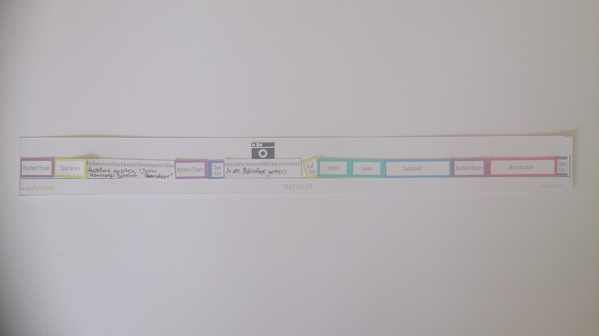

Ein Experiment Zwei Wochen lang habe ich meine Zeitplanung in fremde Hände gelegt. Jeden Abend bekam ich per Mail von einem Fremden Organisator ein Bild meines Tagesplans für den nächsten Tag, führte ihn aus und stellte mir folgende Fragen: Wie fühle ich mich in meiner Rolle als „fremdbestimmte“ Person? Wie lebt es sich, eingezwängt in dieses Zeitkorsett aus Zwang und Kontrolle? Kann ich von „meiner“ Zeit sprechen, wenn ich täglich von Fremden vorgeplante Aktionen ausführe – einen Handlungsmarathon abarbeite? Bin ich entfremdet von der erlebten Zeit? Was bedeutet eigentlich „fremdbestimmt sein“ und wo liegt der Unterschied zu „entfremdet sein“? Im subjektiven Erleben und gleichzeitiger künstlerischer Reflexion habe ich Antworten auf zeitpoltische Fragestellungen gefunden. Es entstanden Collagen aus Diagrammen und Text, die in einem Atlas fremdbestimmter Lebsnezeit zusammengefügt werden.
Aktionsblöcke aus denen die Tagespläne zusammengestellt wurden

Tag 9
 Raum Zeit Kraft Diagramm Tag 8
Raum Zeit Kraft Diagramm Tag 8
Das Handbuch zur Überwindung der Zeit
zeigt die Auseinandersetzung mit der Echtzeit individuellen Erlebens und ihrer medialen Repräsentation.
Zeit, als eine Grunddeterminante des Lebens, wird im Handbuch zur Überwindung der Zeit in ihrer Komplexität vergegenwärtigt. Jede*r Leser*in kann im Laufe der Lektüre ihre besondere Art und Weise der Zeitüberwindung zu fassen bekommen – und sei es nur für einen Augenblick.
Das Handbuch zur Überwindung der Zeit ist ein Hand gebundenes Unikat – ein künsterisches Sammelsurium. Arbeiten, die zum Thema Zeitwahrnehmung entstanden sind werden visualisiert, diskutiert und reflektiert.
Das Handbuch kann im Rahmen der Einbuchbibliothek ausgeliehen werden – dafür bitte per Mail auf die Ausleihliste schreiben lassen.
 Ausstellungsansicht, Kunsthalle am Hamburger Platz Berlin Weißensee
Ausstellungsansicht, Kunsthalle am Hamburger Platz Berlin Weißensee
 Ausstellungsansicht, Kühlhaus Berlin
Ausstellungsansicht, Kühlhaus Berlin
Der Notizzettel ist meine alltägliche Zukunftsprophezeiung. Ich stelle mir die Zukunft vor – die Notiz ist ein Versuch diese zu antizipieren und sie gleichzeitig in einem Medium, als Liste oder grafische Zeichnung, zu fixieren: Das Bild meiner Zeit, die kommt, geschrieben mit dem Stift auf dem Papier. Ich sammelte meine Notizzettel und kopierte sie in Form von Radierungen.
Was ist wirklich passiert? Welche Punkte auf den jeweiligen Zetteln wurden in Aktion umgesetzt, welche umgeplant oder gar verworfen? Die Zwillingsnotiz ist die jeweils zugehörige Darstellung der Überwindung von Zeit durch erfolgte Erledigungen von zuvor Notiertem: Das real mit Zeitaufwand Vollbrachte, die erfolgten Erledigungen also, sind auf dem Zwillingszettel verschwunden. Was bleibt, ist das flüchtig Notierte, das in Vergessenheit Geratene, das, was realiter keine Lebenszeit verbraucht hat.
Beim Betrachten passiert ein Zeitsprung. Welcher Notizzettel war vorher da? Die Kopie oder die Kopie der Kopie?
 Ausstellungsansicht REIF // Kühlhaus Berlin
Ausstellungsansicht REIF // Kühlhaus Berlin


Es gibt diesen Moment zwischen Schlafen und Wachen. Diesen Moment, an den man sich objektiv erinnern kann. Man liegt im Bett und wacht auf: das beißende Weckergeräusch, das Bewusstwerden, das Weichen des Traumes. Kann man diese mentale Situation konservieren, um sie noch einmal hervorzurufen?
Aufwachen ist das Ende und der Anfang
Aufwachen ist ein Zwischenstadium
Aufwachen ist ein Übergang
Ich kann im Nachhinein den kompletten Moment wiederherstellen: Wenn ich die Zeichnungen sehe und meine selbst gesprochenen Worte höre, verkoppeln sich diese nachträglichen Ausdrucksformen zu einem neuen Eindruck und führen in die sinnliche Erinnerung des kurzen Augenblicks vom Übergang in das Tagesbewusstsein zurück. Ich erlebe die Farben wieder, die Bewegungen, den fast noch traumhaften Kontext des Augenblicks, als der Traum schon im Verschwinden begriffen war und das Tagesbewusstsein langsam auftauchte - als ob durch hingehauchte, halbwach geflüsterte Worte und nachträgliche Zeichnungen mein inneres Auge wieder farbig sehen könnte und innere Fühler wüchsen, um den untergegangenen Traumfetzen wieder zu verlebendigen.


Durch die mir auferlegte Zeitbegrenzung, habe ich keine Zeit mir zu überlegen was genau ich skizzieren möchte. Ich skizziere frei aus der Hand: schnell, spontan, selektiv. Die Repräsentanz der Kreuzungsumrundung zeigt sich auf meiner Skizze, die das direkt Wahrgenommene ganzheitlich zum Ausdruck bringt.Die Unmittelbarkeit des ikonographischen Notierens, in derselben Zeiteinheit wie die Handlung kurz davor, fixiert den mentalen Zustand in der Situation in der Skizze.
 Ausstellungsansicht Workshop Sinnesausflug // L40, Verein zur Förderung von Kunst und Kultur am Rosa-Luxemburg-Platz e.V.
Ausstellungsansicht Workshop Sinnesausflug // L40, Verein zur Förderung von Kunst und Kultur am Rosa-Luxemburg-Platz e.V.
 Ausstellungsansicht Workshop Sinnesausflug // L40, Verein zur Förderung von Kunst und Kultur am Rosa-Luxemburg-Platz e.V.
Ausstellungsansicht Workshop Sinnesausflug // L40, Verein zur Förderung von Kunst und Kultur am Rosa-Luxemburg-Platz e.V.
 Bleistift auf Papier / 2:07 min
Bleistift auf Papier / 2:07 min
 Bleistift auf Papier / 3:00 min
Bleistift auf Papier / 3:00 min
 Höhlendorfworkshop
Höhlendorfworkshop
Katja Marie Voigt setzt sich künstlerisch mit Lebenszeit im Spannungsfeld von Entfremdung und Beschleunigung auseinander. Schwerpunkt ist das Verhältnis zwischen dem selbstbestimmten Erleben von Zeit, verschiedenen mentalen Zuständen und Kontrolle. In performativen Experimenten begibt sie sich in selbst auferlegte Zeitstrukturen, in denen das eigene Handeln und der freie Wille eingeschränkt sind. Der Fokus solcher Selbstversuche liegt bewusst und radikal auf der eigenen Empfindung. Sie nimmt gleichzeitig die Rollen von Versuchsleitung und Versuchsperson ein. Es entstehen Collagen aus Zeichnungen, Diagrammen und Texten. So untersucht sie als forschende Künstlerin zeitgenössische Debatten hinsichtlich intuitiv erfassbarer Implikationen, die rationale Argumentationsstrategien pointieren und sich ihnen gleichzeitig entziehen.
* 1986 Bonn
Seit 2015 // PhD. Kandidatin Bauhaus Universität Weimar, FG freie Kunst 2013 // Master of Arts, forschende Kunst im öffentlichen Kontext, Kunsthochschule Berlin Weißensee 2011 // Bachelor of Science, Architektur, TU Berlin
seit 2012 // Vorsitzende Kunst Werk Stadt Berlin e.V.
2016 // Mitglied Initiativenzusammenschluss ZUsammenKUNFT / Pilotprojekt Initiative Haus der Statistik Berlin
2017 - 2018 // NACHT / gefördert vom Berliner Projektfonds Kulturelle Bildung
2016 - 2017 // Kunstpostamt / gefördert vom Bundesministerium für Bildung und Forschung
2013 - 2018 // Moabees – ein Pilotinnenprojekt am ZK/U Berlin / gefördert vom Bundesministerium für Bildung und Forschung
2012 - 2013 // Bienenbewegung / gefördert vom Berliner Projektfonds Kulturelle Bildung
2017 // Die Kapelle und das spezifische Gewicht der Zeit / kuratiert von Anne Brannys / ehem. Kapelle im Stadtschloss Weimar
mehr Infos hier
2016 // Ausstellung Künstlerinnengruppe Moabees / HONIGKINO #3 / ZK/U Berlin
2015 // ARYOUTHERE? / L40, Verein zur Förderung von Kunst und Kultur am Rosa-Luxemburg-Platz e.V.
2014 // IMAGO / Galerie Zwitschermaschine, Berlin (solo)
2014 // REIF / Kühlhaus Berlin
2014 // TI:ME / Salon am Moritzplatz Berlin / kuratiert von Mari Poller
2014 // ANONYME ZEICHNER – Based in Berlin / Pavillon am Milchhof Berlin
2013 // Lecture / HANDBUCH ZUR ÜBERWINDUNG DER ZEIT / Kunsthalle am Hamburger Platz, Berlin Weißensee
2013 // 7LOCOMOTION / Kunsthalle am Hamburger Platz, Berlin Weißensee
2012 // MONHABITE EINE EXPEDITION/ ZK/U (Zentrum für Kunst und Urbanistik, Berlin)
2011 // Lecture / IBA LABOR Kunst Stadt, Hamburg / mit dem Club der internationalen Raumforscher Berlin
Penthaus für schöne Formate Kunst Werk Stadt Berlin e.V. Moabees – ein PilotInnenprojekt Bienenbewegung Bienengärtchen POG Artikel in der Zeitschrift Kultur bildet
info*a t*katjamarievoigt.com
© Katja Marie Voigt 2016
All rights reserved.